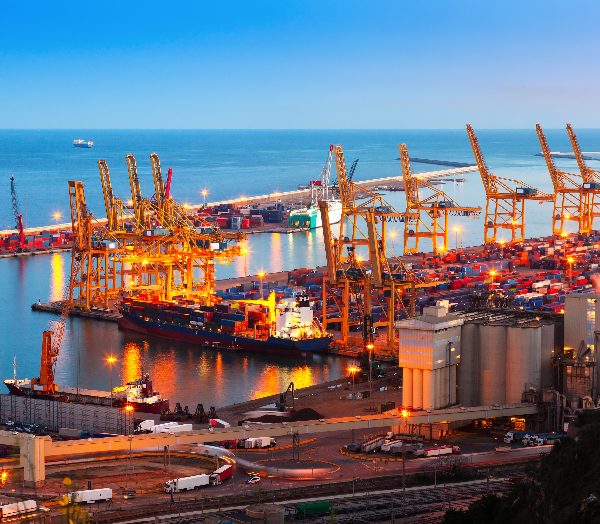
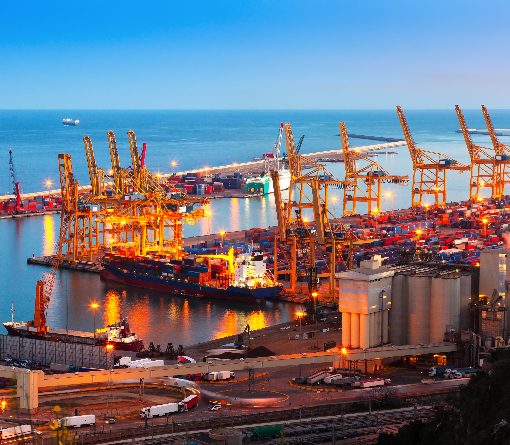

Logística Internacional
Quer saber mais sobre a Distribuição Física na Logística?
Assista ao vídeo a seguir:

Distribuição física (nível 1)
Uma organização pode ser divida em três processos principais: suprimentos, produção e distribuição.
Onde termina o processo de distribuição de uma empresa, inicia o processo de suprimentos da empresa seguinte.